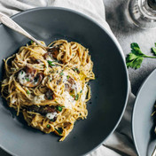
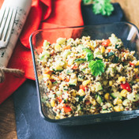

1.PALAČINKE OD POVRĆA:
Sastojci:
1 šolja brašna od leblebije
1 kašičica kurkume
1/2 kašičice praška za pecivo
3/4 šolje vode
1/3 šolje pirea od kuvanog batata
2 šolje narendane šargarepe
1 šolja kuvanog baby spanaća
Ulje za podmazivanje tiganja
Priprema recepta
U većoj posudi izmešajte brašno od leblebije, so, kurkumu, prašak za pecivo, pa dodajte vodu i napravite testo za
palačinke. U njega dodajte pire od batata, opet promešajte, pa na kraju dodajte omekšan spanać (spanać ne morate kuvati, možete ga omekšati na vrelom tiganju) i rendanu šargarepu. Ako je testo suviše gusto, dodajte još neku kašiku vode. Pecite palačinke oko tri minuta sa svake strane. Poslužite uz svež paradajz.
2.ŠPAGETE SA ŠAMPINJONIMA:
Sastojci:
250g špageta od integralnog brašna
2 kašike ekstra devičanskog maslinovog ulja
3 čena belog luka
1 kašičica provansalskog začina (može i mešavina majkine dušice, origana i ruzmarina)
500g svežih šampinjona
200 ml pavlake za kuvanje
pola šolje rukole
so, biber
Priprema recepta
Testeninu skuvajte prema uputstvu sa pakovanja. Zagrejte maslinovo ulje i dodajte izgnječen beli luk. Kratko
promešajte, a zatim dodajte naseckane šampinjone. Dinstajte dok šampinjoni ne dobiju zlatnu boju, zatim dodajte
provansalski začin, slatku pavlaku i još kratko sve dobro promešajte. Dodajte so i biber. Servirajte špagete sa sosom
od pečuraka i rukolom.

3.PLAVI PATLIDŽAN SA KINOOM:
Sastojci:
1 plavi patlidžan
3 čena belog luka
2 mlada luka
4 kašičice soja sosa
2 kašičice ulja od susama
1 kašika blago pečenog susama
Priprema recepta
Plavi patlidžan operite, ogulite i isecite na veće komade. Kuvajte ga na pari oko pet minuta, vodeći računa da se ne
prekuva. Patlidžan je spreman kada viljuška kroz njega lako prođe. Izvadite ga iz posude i ostavite da se kratko
prohladi. U međuvremenu dobro izmešajte izgnječen beli luk, sitno naseckan mladi luk, soja sos i susamovo ulje. U
tu smešu dodajte kuvani plavi patlidžan nacepkan na sitnije komadiće. Sve dobro izmešajte i pospite semenkama
susama. Servirajte sa kuvanom kinoom ili pirinčem.
